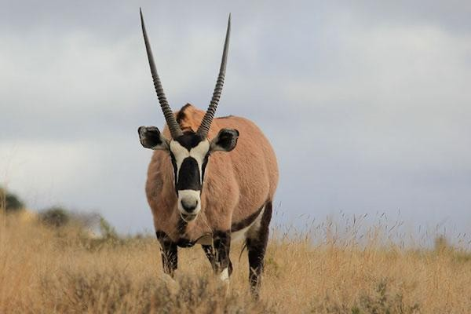

GEMSBOK
Gemsbok are the largest species in the genus Oryx. They stand about 1.2 m (4 ft) at the shoulder.[7][8] The body length can vary from 190 to 240 cm (75 to 94 in) and the tail measures 45 to 90 cm (18 to 35 in).[9] Male gemsbok can weigh between 180 and 240 kg (400 and 530 lb), while females weigh 100–210 kg (220–460 lb).
WHERE WILL YOU FIND THEM?
You will find the Gemsbok at GMS01,1st gate when you enter the Zoo